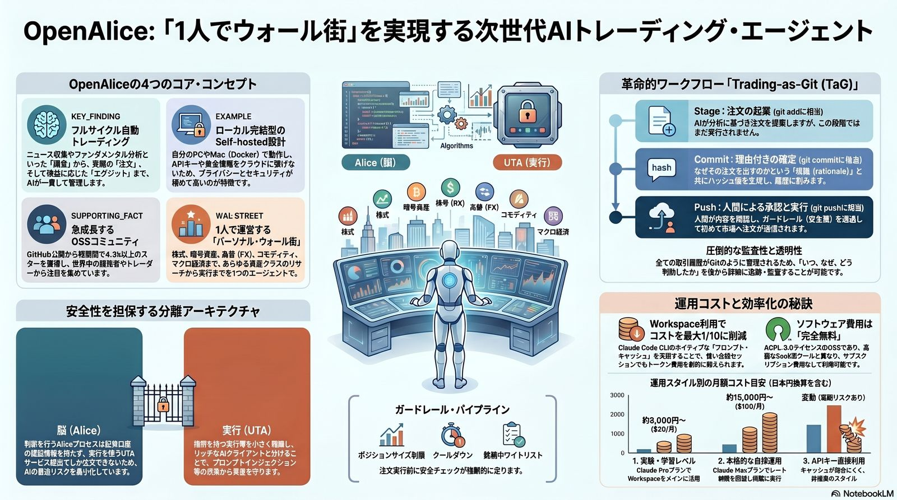
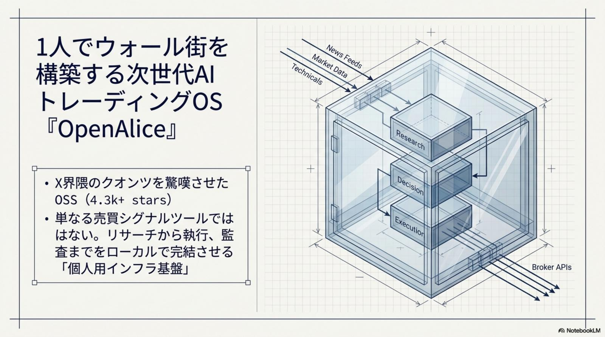
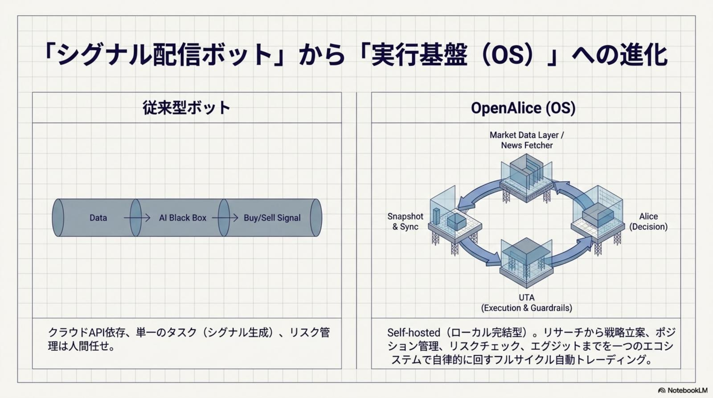
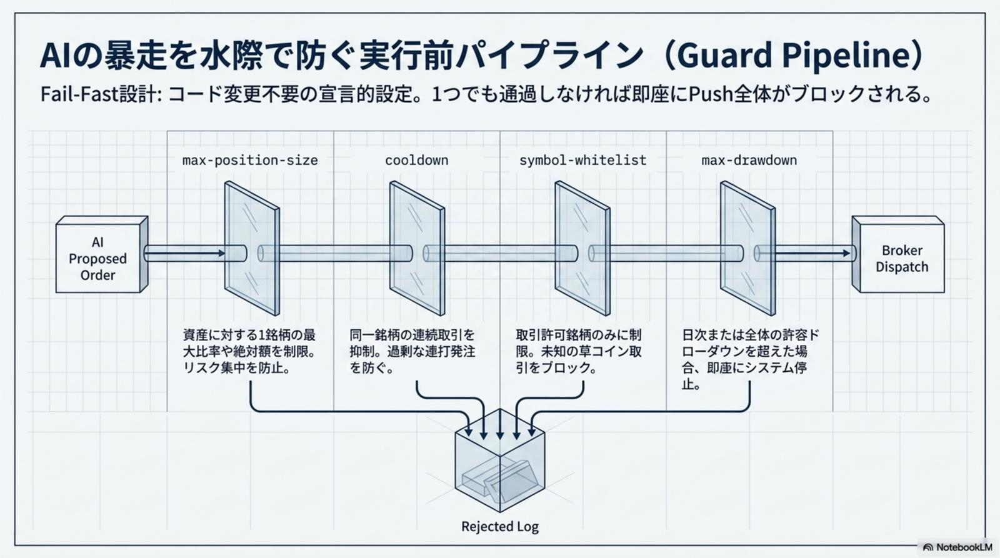
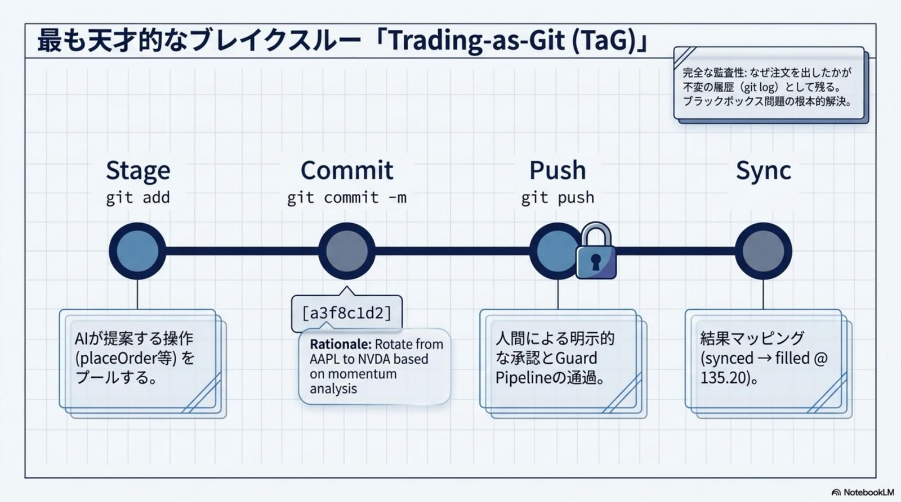
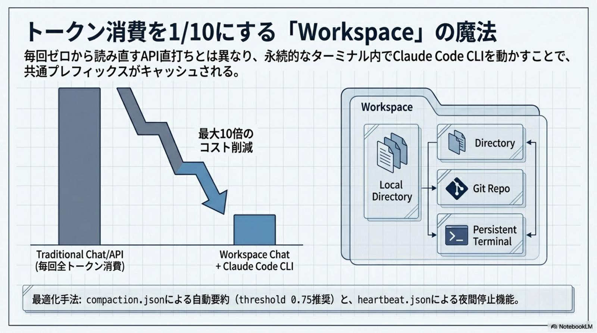
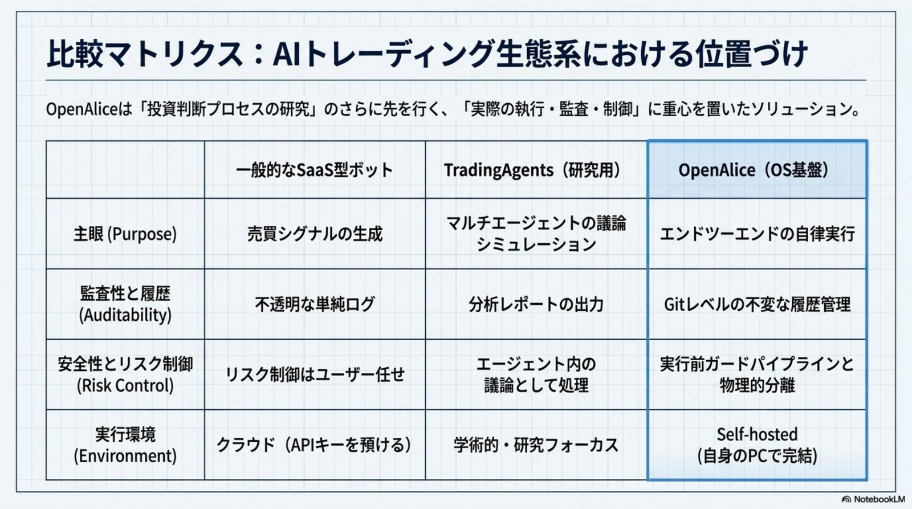
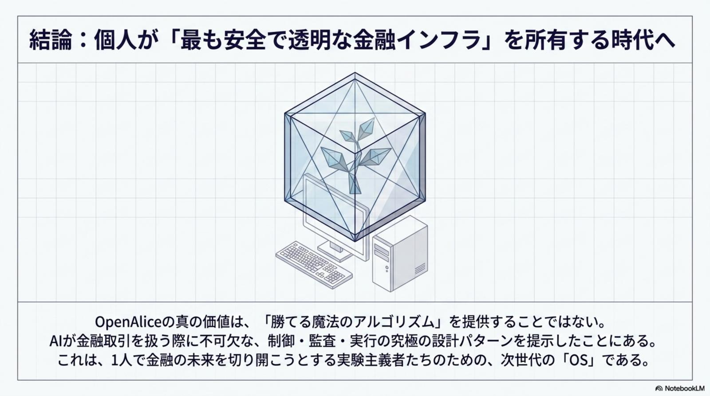
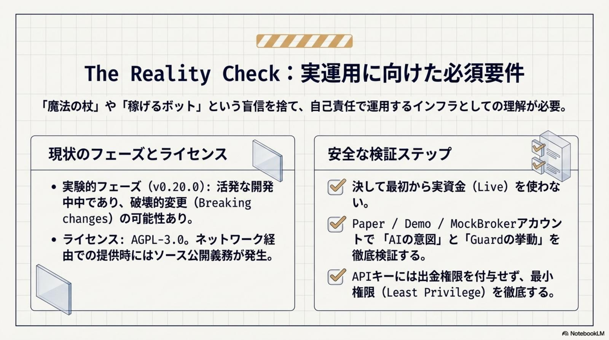
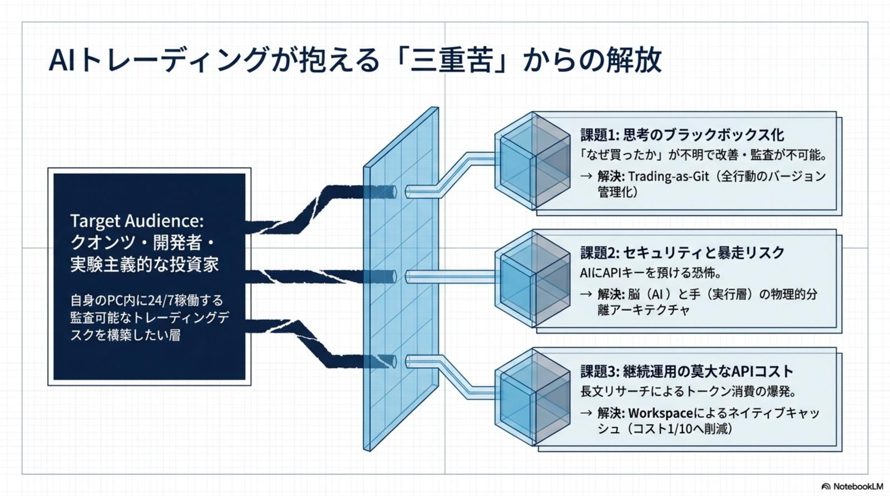

24 時間監視と感情の規律
従来の障壁：24 時間監視の限界、リサーチ不足、感情による規律の乱れ。OpenAlice は AI による 24/7 のフルサイクル自動運用 と Git 的な規律に基づいた取引実行で、機関投資家級の運用環境を個人に提供する。
OpenAlice · Your one-person Wall Street · Issue № 05/28
2026 年 5 月、X を中心に世界のクオンツ・トレーダーコミュニティ（特にフランス語圏）で 「Dinguerie（ヤバい／とんでもないもの）」と熱狂を呼んだ OSS、それが OpenAlice。GitHub で瞬く間に 4.3k stars を超え、単なる自動売買ツールの枠を超えた「自律型実行基盤（Trading OS）」として、業界の常識を覆しつつある。
OpenAlice が従来の「シグナル生成 AI」と決定的に異なる点は、リサーチ → 戦略立案 → 注文起案 → リスク管理 → ポートフォリオ監視までフルライフサイクルを自律完結すること。三層分離アーキテクチャ（Alice 脳 × UTA 実行層 × Guardian スーパーバイザー）で「最小特権の原則」を物理保証し、革新的 Trading-as-Git（TaG）で Stage → Commit（Rationale 付き 8 文字ハッシュ）→ Push（人間承認 + ガードレール）→ Log の規律を導入。Workspace と Prompt Caching で入力トークンコスト最大 90% 削減。AGPL-3.0 への移行リスクまで含めた次世代金融 AI インフラのリファレンス実装だ。

従来の AI は価格予測やシグナルを提示する「アドバイザー」に過ぎなかった。OpenAlice は 判断の賢さと実運用に耐える規律 を統合し、フルライフサイクルを完結させる真の「OS」として登場——プロフェッショナルたちが熱狂する理由はここにある。

OpenAlice は、個人が機関投資家レベルのトレーディングデスクを構築する際の、コスト × 技術的障壁 × セキュリティリスクという根本的な課題に解を与える。「投資の民主化」と「高度な安全性」の両立 がこのプロジェクトの戦略的意義だ。
従来の障壁：24 時間監視の限界、リサーチ不足、感情による規律の乱れ。OpenAlice は AI による 24/7 のフルサイクル自動運用 と Git 的な規律に基づいた取引実行で、機関投資家級の運用環境を個人に提供する。
複雑なブローカー API の統合と、セキュアな実行環境構築は大きな摩擦。複数ブローカーを統合する UTA と、AI 判断層を分離したセキュア SDK で実装コストを劇的に削減する。
戦略の再現性、判断根拠の監査性、バックテストと実運用の乖離。Trading-as-Git による完全な取引履歴と自然言語による戦略のコード化で、研究と実運用のブリッジを構築する。
すべての実取引に「Rationale（判断根拠）」がコミットメッセージとして紐付くため、事後的にバックテスト時の仮説と照らし合わせ、なぜ乖離が生じたかをプログラムレベルで監査・修正できる革新。

OpenAlice は、AI の脆弱性と金融取引の厳格性を両立させるため、三層の物理的分離アーキテクチャを採用。「最小特権の原則」に基づき、AI（Alice）がプロンプトインジェクションで暴走しても、資産全体への致命的被害を防ぐリファレンス実装となっている。
各層が独立した責務を持ち、「攻撃可能な層」と「致命的な被害」を物理的に切り離す。これは単なるソフトウェア工学のベストプラクティスではなく、金融という「失敗が許されない領域」で AI を運用するための業界初のリファレンス実装と言える。

OpenAlice の白眉は、ソフトウェア開発の Git 概念を金融実務に持ち込んだ「Trading-as-Git（TaG）」。すべての取引に「いつ・なぜ・誰が・どの銘柄を」が改ざん困難な形で記録される革命的な規律設計だ。

プロの現場では、ブローカーとの通信は常に非同期（Asynchronous）であり、約定価格や数量は瞬時に確定しない。OpenAlice は tradingSync ツールで市場の約定結果を Git の状態（Head Commit）に動的同期し、帳簿と現実の取引所の乖離を最小限に抑える。Git の「ロールバック」とは異なり、一度約定したものは取り消せないため、失敗時は迅速な「revert 取引（反対売買）」を起案する実務的な規律が求められる。
git add に相当。執行直前に強制される 「Guard Pipeline」 は、AI の暴走を食い止める「第二の防衛線」。ポジション上限・クールダウン・ホワイトリストの 3 主要ガードで、致命的損失を物理的に防ぐ。一方で Evolution Mode は諸刃の剣として運用判断が問われる。
3 つの主要ガードは、致命的損失を引き起こす典型的アンチパターン（ポジションの過剰集中 / 連打による暴走 / 想定外銘柄への発注）を物理的に遮断する設計。これに Human-in-the-loop を組み合わせることで、AI の判断を信頼しつつも、最終決裁は人間が握る「監督付き自律」を実現する。

Evolution Mode：自己進化という諸刃の剣 — OpenAlice には、AI が自身のコードやツールを Bash 経由で修正・拡張できる Evolution Mode が存在する。これは戦略を市場環境に合わせて自動進化させる強力な機能だが、同時にプロンプトインジェクションに対するアタックサーフェスを劇的に広げるリスクを孕む。プロフェッショナルな運用では「利便性」と「セキュリティ」のトレードオフを厳格に評価し、権限設定を慎重に行う必要がある。
運用コストの鍵を握るのは Claude API の効率的な活用。OpenAlice は Anthropic の Prompt Caching（KV キャッシュ）を最大限に引き出す Workspace を推奨する。システムプロンプトや過去の文脈をサーバー側にキャッシュすることで、入力トークンコストを最大 90%（1/10）削減可能。
Claude Pro（$20/月）。手動リサーチ中心。コスト重視のスターター層に最適。最初の 2〜4 週間の学習期間にちょうど良い。
Claude Max 5x（$100/月）。レート制限の緩和。自動ループに最適。実運用フェーズの主力プラン。
システムプロンプトと文脈をキャッシュ化。入力トークンコストを最大 90% 削減。長時間セッションでも経済性が破綻しない。
キャッシュ効率が悪く、AI の長文リサーチでコストが制御不能になるリスク。高額請求事故の温床として避けるべきパターン。

長期運用では、AI の記憶（コンテキスト）の肥大化が精度低下とコスト増を招く。これを制御するのが compaction.json。要約とトランケートの戦略的トレードオフを運用者が握る。
maxContextTokens（保持する最大トークン数）／ autoCompactionThreshold（圧縮を開始する閾値、例: 0.75）／ summarizationModel（"auto" 設定を推奨）。3 パラメータの相互作用でメモリ・コスト・精度のバランスを取る。
「要約（Summarize）」は情報の連続性を保つが、「削除（Truncate）」はコストを下げる。情報を削りすぎると AI が過去の判断ミスを「忘れる」ため、最初は緩めの設定（120k / 0.8）から開始し、徐々に締めていくステップが推奨される。
プロフェッショナルな法人ユーザーが最も留意すべきはライセンスの変更だ。OpenAlice は当初の MIT から AGPL-3.0 へ移行した。独自の取引ロジックをコードに組み込んでネットワーク経由で利用する場合、ソースコードの開示義務が生じる可能性がある。

実資金を投じる前に、必ず以下の 3 ステップを踏むこと。1 つでも省略すると、致命的損失や法的トラブルへ直結するリスクがある。「速く動く」より「正しく動く」を優先せよ。
OpenAlice は単なる「利益を出す魔法の箱」ではなく、AI が不確実なリスク資産を扱うための、安全な「OS」であり「監査インフラ」。v0.20.0 という実験的段階ではあるが、その設計思想は次世代の AI 金融インフラのリファレンス実装となるだろう。
三層分離アーキテクチャと TaG の「監査可能な自律 AI」設計は、金融以外の不可逆な実行を伴うあらゆる領域（医療・法務・インフラ運用）に波及するだろう。OpenAlice はその「先駆けとなるリファレンス実装」であり、AI が単なる助言者から「実行責任を負うエージェント」へ進化する境界線を技術で定義した。

立場ごとに最初の一歩は変わる。「速く動く」より「正しく動く」を最優先するのが OpenAlice 運用の鉄則だ。
MockBroker で TaG ワークフローを 1 週間以上慣熟させた後、出金権限オフの専用口座 × 最小レバレッジ × ホワイトリスト厳格化で実取引へ。Claude Pro ($20) からスタートし、戦略安定後に Max 5x へ移行。
UTA を活用した複数ブローカー統合でセキュアな実装を最短化。AI 判断層と実行層の物理分離設計を踏襲し、Evolution Mode は Bash 実行範囲をサンドボックス内に制限する権限ポリシーを Day 1 で確立。
AGPL-3.0 への移行に伴うソースコード開示義務リスクを法務と精査。秘伝のアルゴリズムを内製する場合はSelf-hosted の閉域 LAN 運用を前提に。Live/Backtest 乖離分析を Rationale ベースで実施。
OpenAlice は単なる「利益を出す魔法の箱」ではなく、AI が不確実なリスク資産を扱うための、安全な「OS」であり「監査インフラ」である。— Your one-person Wall Street · OpenAlice が示唆する「金融 × AI」の未来 · 2026-05-28

OpenAlice 以外の 2026-05-28 主要トピックを併せてピックアップ。